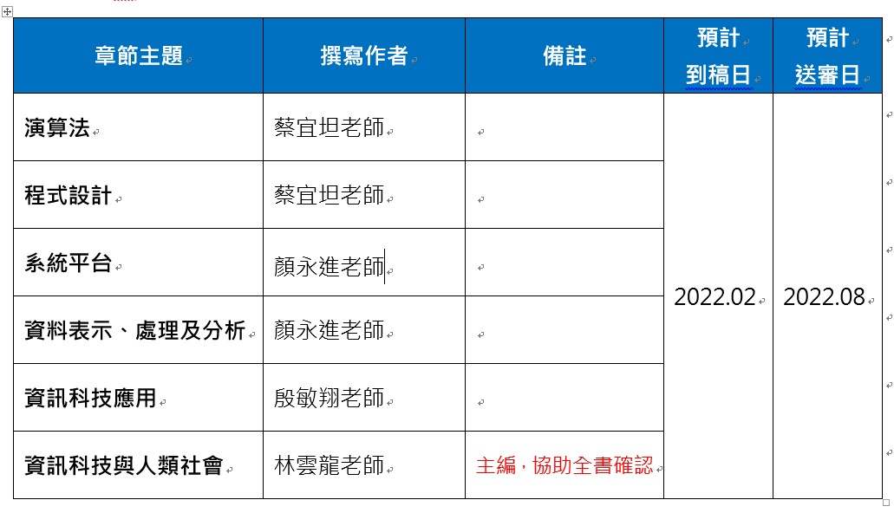

Index
Table of Contents
1 任務

Figure 1: 負責章節

Figure 2: 章節內容
2 課綱要求
2.1 系統平台(S)
- 資 S-V-1 系統平台之運作原理。
- 資 S-V-2 系統平台之未來發展趨勢。
2.2 資料表示、處理及分析(D)
- 資 D-V-1 巨量資料的概念。
- 資 D-V-2 資料探勘與機器學習的基本概念。
3 系統平台
在這個3C用品泛濫的世界，人手一部手機，坐下來就面對電腦，然而我們所極度依賴或沉迷的其實不是3C用品本身，而是其上的應用軟體（App）。而軟體之所以能在手機或電腦上運作，其實是系統平台提供了執行環境，此處的系統平台包括電腦硬體（hardware）、也包括管理這些硬體資源的作業系統（Operating System, OS）。
3.1 系統平台的發展歷史
3.1.1 系統平台的濫觴
1945年，一位程式設計師捧著一叠打孔紙卡來到一部IBM讀卡機前，她（是的，當時所謂的程式設計師多是女生）的身後是一部重達30噸、佔地167平方公尺、運行耗電160千瓦、傳說中一旦開機會導致費城限電的龐大機器。為了這次的展示，一些工作人員已事先忙碌數天，拿著手冊調整上千個開關與線路，以便執行打孔紙卡裡的程式。
在這次的展示中，這部耗資近五十萬美元（相當於2020年的720萬美元)花了20秒計算出一顆飛行時間30秒的砲彈彈道，而同樣的工作需要一位計算員（computer，是的，這就是這個單字最早的意思，而她們也幾乎清一色是女性）以桌上型計算器努力工作兩天。這台龐然大物就是號稱史上第一台通用型電腦的ENIAC（The Electronic Numerical Intergrator and Computer）。

Figure 3: 正在調整ENIAC設定的幾位程式設計師
在上述石器時代的電腦史，我們看到了一套極無效率的系統平台，要運算的數據以打孔卡片的型式儲存，而所謂的程式即是工作人員在ENIAC實際運算前對其所進行的繁雜硬體開關與線路設定，這導致ENIAC每次只能執行一支程式，而且要執行不同程式就必須要再對機器重新做一次設定，至於執行結果也只能以燈號顯示1, 2而非儲存在電腦中。對於一部造價如此高昂的機器，這無疑是一種令人心寒的浪費；而造成ENIAC如此困境的原因之一是它沒有儲存裝置、沒有記憶體、也沒有硬碟。
3.1.2 馮紐曼架構
在受邀參觀完ENIAC後，馮紐曼（John Von Neumann）一方面驚訝於其運算速度，也覺得這種程式設計方式太過複雜，1945年6月，這位八歲會算微積分、未滿30歲就與愛因斯坦等人並列普林斯頓高等研究院創院的四大老之一的天才在火車上草擬了《EDVAC 報告初稿》（First Draft of a Report on the EDVAC）3。他在這份文件中提出了兩項影響日後所有電腦發展的建議：
- 以二進位取代十進位元來運算和儲存資料。
- 將電腦的設計架構分為運算單元、控制單元、記憶單元，輸入裝置與輸出裝置五大單元，此架構也被後世稱為馮紐曼架構。

Figure 4: 馮紐曼提出的電腦架構。圖：WIKI

Figure 5: 影響深遠的〈EDVAC 報告初稿〉封面。圖：WIKI
在馮紐曼架構的規範下，程式的執行不再像ENIAC那樣以硬體線路與開關進行設定，而是如同像ENIAC儲存運算數據般也存在打孔卡片上，程式要先由讀卡機讀入記憶體，要執行時再由控制單元到記憶體中讀出來執行，此即「內儲程式電腦」（Stored Program Computer）。1951 年，美國軍方根據這份報告、在馮紐曼的協助下，斥資五十萬美元打造了計算機「EDVAC」（Electronic Discrete Variable Automatic Computer）。此時的系統平台已然可輸入不同程式，進而執行產生不同的結果。
3.1.3 從批次執行到分時系統
如本章前言所述，系統平台包含電腦硬體與作業系統，提供應用程式執行所需的環境 。而作業系統存在的目的就在於協助應用程式在電腦上執行，為此，作業系統必須監控管理電腦的硬體資源，包括記體體、儲存裝置與輸入輸出裝置。第一個具備這些功能雛型的作業系統為IBM 704電腦的GM-NAA I/O（input/output system of General Motors and North American Aviation），GH-NAA IO開發於1956年，它可以批次對不同應用程式做載入、執行、輸出結果，由於每次只能執行一支程式，所以程式必須排隊等待執行中的程式結束，這便是所謂的批次處理系統（batch processing）。
同年，UNIVAC的作業系統引入了中斷（interrupt）技術，成為日後分時共享（time-sharing）系統的先驅。此前，系統平台的記憶體只能載入一支程式，即使這支系統正在列印大量資料，也要等全部資料列印完畢才能載入下一支程式進來執行。而中斷技術則允許系統平台載入多個程式，當一支程式正在進行輸入/輸出動作時，該程式就會被中斷，此時第二支程式就可立刻被執行，從而大幅提高硬體的執行效能。
註：這裡的中斷（interrupt）並不是停止的意思， 而是「程序的狀態進入中斷狀態，CPU 不會理會該程序」。
3.1.4 系統平台的發展歷史
3.2 系統平台的運作原理
- 資源分配
- 工作排程
3.3 系統平台的未來
- 雲端運算
- 物聯網
4 資料表示、處理及分析
電腦自發明以來，始終只有一個目的：處理資料。而所謂資料處理（Data Processing）涉及兩個最基本的問題：
- 如何儲存資料？
- 如何對資料進行運算？